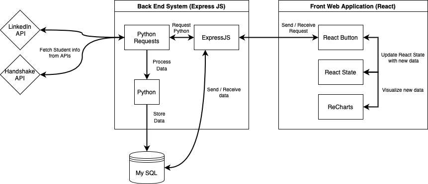

CareerNet is a web application that scrapes student information from popular career-building websites and organizes the relevant data to be easily accessible by college deans so that they may understand the career growth of their students. Tracking a student’s career milestones is valuable to any university because it can give insight on not only the student but the development of the degree plan they are in. This allows a college to get a better grasp on what degree plans are succeeding and how they can improve upon them. This product applies to all colleges interested in creating a student success-focused university.
The student information will be stored by leveraging Handshake and Linkedin’s available data as a source. With the stored data, the web application will populate based on the page the user is interfacing with. Additionally, users will also be able to import data manually using CSV data from course surveys. The main user interface will be a dashboard that allows the user to visualize the collected data from the school based on different parameters such as degree, school year, job status, and other milestones that can be added by the user to be tracked. Beyond the initial dashboard, the user may also search the site for individual students in order to view the students’ individual milestones in a timeline format.
